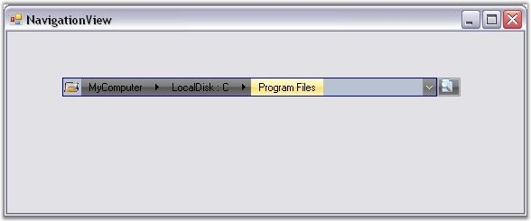
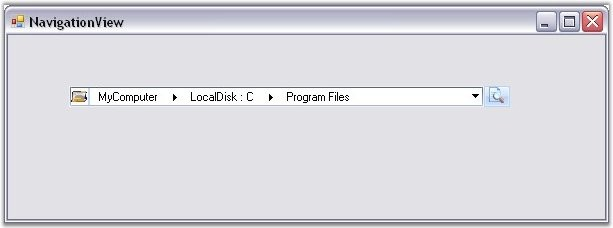
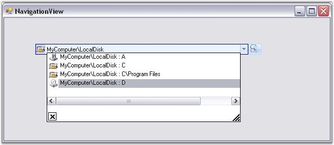

Visual Styles enhance the appearance of the NavigationView control. NavigationView supports the following visual styles: Office 2007 and Vista.

Figure 1484: NavigationView with "Office 2007 (Black)" Visual Style

Figure 1485: NavigationView with "Vista" Visual Style
Edit Mode Support
You can switch to an editable NavigationView path, allowing the user to quickly reach a location, by clicking on the text area of the NavigationView and typing the path.

Figure 1486: NavigationView in Edit Mode